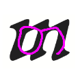
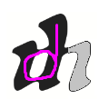
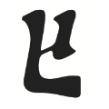
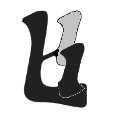
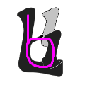

იმისათვის რომ გაიმარტივოთ ხუცური ასოს დამახსოვრება, სცადეთ მიამსგავსოთ მისი დამწერლობა მხედრულ (თანამედროვე)
დამწერლობას.
მაგალითად:
-
ასო თ თითქმის ერთნაირად გამოიყურება ხუცურშიც და მხედრულშიც:

-
ასევე ხუცური ასო ს თითქმის იდენტურია მხედრულისა:

-
ხუცური ასო ო ჰგავს გადაბრუნებულ მხედრულ ასოს:
-
ხუცურ ძ ასოს, წარმოიდგინეთ რომ მოაჭერით "კუდი":

-
ხუცურ ხ ასოს, წარმოიდგინეთ რომ აქვს "ტოტი", და ეს ტოტი ჩამოიღუნა დაბლა და წრე შეკრა:



...და ასე შემდეგ.
გამოიყენეთ თქვენი წარმოსახვა, რათა დანარჩენ ასოებსაც მოუფიქროთ მიმსგავსება.